<!DOCTYPE html>
<html lang="es">
<head>
  <meta charset="UTF-8" />
  <meta name="viewport" content="width=device-width, initial-scale=1.0"/>
  <title>Visor Único</title>

  <!-- Favicon del proyecto -->
  <link rel="icon" href="../assets/img/ennde3d_icon.png" type="image/png">
  
  <!-- Fuentes -->
  <link href="https://fonts.googleapis.com/css2?family=Orbitron:wght@600&display=swap" rel="stylesheet">
  <link href="https://fonts.googleapis.com/css2?family=Rajdhani:wght@400;700&display=swap" rel="stylesheet">

  <!-- Estilos comunes y específicos -->
  <link rel="stylesheet" href="/styles/bootstrap.css"> 
  <link rel="stylesheet" href="/styles/scrollbar.css">   
  <link rel="stylesheet" href="/styles/loader.css">           
  <link rel="stylesheet" href="/styles/sidebar.css">          
  <link rel="stylesheet" href="/styles/viewer.css">      
  <link rel="stylesheet" href="https://cdn.jsdelivr.net/npm/simplebar@latest/dist/simplebar.min.css">

  <!-- Scripts principales -->
  <script type="module" src="/js/loader.js" defer></script>                      
  <script type="module" src="/js/scene/init/initSingleViewer.js" defer></script> 
  <script type="module" src="/js/ui/viewerMenus.js" defer></script>     
  <script type="module" src="/js/ui/loadHdriOptions.js" defer></script>    
  <script type="module" src="/js/utils/tooltips.js"></script>     
  <script type="module" src="/js/bootstrap.bundle.js"></script>
  <script type="module" src="/js/ui/toonShadingMenu.js"></script>
</head>

<!-- Proyecto desarrollado por Alberto Estepa y David Gutiérrez (DAM 2025) para ENNDE -->

<body class="bg-dark">

  <!-- LOADER DE INICIO (animación de cubo) -->
  <div id="loader-container">
    <div class="scene">
      <div class="cube-wrapper">
        <div class="cube">
          <div class="cube-faces">
            <div class="cube-face shadow"></div>
            <div class="cube-face bottom"></div>
            <div class="cube-face top"></div>
            <div class="cube-face left"></div>
            <div class="cube-face right"></div>
            <div class="cube-face back"></div>
            <div class="cube-face front"></div>
          </div>
        </div>
      </div>
    </div>
  </div>

  <!-- BOTÓN DE RETORNO A INDEX -->
  <button id="back" onclick="window.location.href = '/index.html'">
    <svg fill="#000000" xmlns="http://www.w3.org/2000/svg" viewBox="0 0 24 24"><path d="M15 18l-6-6 6-6"/></svg>
  </button>

  <!-- CONTENEDOR PRINCIPAL DEL VISOR + SIDEBAR -->
  <div id="visorWrapper" class="d-flex flex-column flex-lg-row">
    <div id="viewerContainer" class="position-relative">
      <!-- === CAMBIO: AHORA LOS BOTONES ESTÁN DENTRO DE indexViewer1 === -->
      <div id="indexViewer1" class="w-100 h-100 position-relative overflow-hidden">
        <!-- Botones para helpers -->
        <div id="helperToggles" class="helper-icons" style="display: none;">
          <button id="toggleAxes" class="btnhelper toggleAxes toolbarButton" 
            data-bs-toggle="tooltip" data-bs-placement="bottom" title="Mostrar/ocultar ejes">
            
          </button>
          <button id="toggleGrid" class="btnhelper toggleGrid" 
            data-bs-toggle="tooltip" data-bs-placement="bottom" title="Mostrar/ocultar cuadrícula">
            
          </button>
        </div>
      </div>
    </div>
    <!-- SIDEBAR CON ICONOS -->
  <aside id="sidebar" class="sidebar">

      <div id="toolbar" class="d-flex flex-row flex-lg-column align-items-center justify-content-start gap-5 ">
      
        <!-- Logo ENNDE, arriba -->
        <div class="ennde-logo-toolbar btnPrincipales toolbarButton">
          
        </div>

        <div class="ActionButtons d-flex flex-row flex-lg-column align-items-center justify-content-center gap-5">
          <button id="btn-world" class="btnPrincipales world toolbarButton" data-bs-toggle="tooltip" title="Personaliza la escena">
            
          </button>

          <button id="btn-axes" class="btnPrincipales material toolbarButton" data-bs-toggle="tooltip" title="Personaliza el modelo">
            
          </button>

          <button id="btn-info" class="btnPrincipales info toolbarButton">
            
          </button>

          <button id="btn-goToCompare" class="btnPrincipales compare toolbarButton" data-bs-toggle="tooltip" title="Compara dos modelos 3D">
            
          </button>
        </div>
      </div>

      <!-- PANEL DE MENÚS (mismo comportamiento que visor doble) -->
<div id="menuPanel" class="menu-panel">

  <!-- Panel para personalización del entorno -->
  <div id="menu-world" class="menu-content d-none h-100 w-100 d-flex justify-content-center  align-items-center">
    <h3 class="panel-title mb-3">
      
      Environment
    </h3>
    <div id="bloqueHDRI" class="opcionesHDRI h-100 d-flex flex-row flex-lg-column ">
      <div class="colorEnv tarjeta ">
        <input type="color" name="bgcolor" id="chooseBgColor" class="input color-picker envOption">
      </div> 
    </div>
  </div>

  <!-- Panel de personalización de material y modos -->
  <div id="menu-modelo" class="menu-content d-none h-100 d-flex flex-md-column overflow-scroll">
    <h3 class="panel-title mb-3">
      
      Material 
    </h3>
    <div class="containerModeloSettings d-flex flex-row flex-lg-column align-items-center" >

      <!-- Formulario de estilos -->
      <form id="formStyles" class="d-flex flex-row flex-lg-column ">
        <label for="color">Color:</label>
        <input type="color" name="color" id="chooseColor" class="input">
        <label for="roughness">Roughness:</label>
        <input type="range" name="roughness" min="0" max="1000">  
        <label for="metalness">Metalness:</label>
        <input type="range" name="metalness" min="0" max="1000">
        <label for="transmissionSlider">Transparencia:</label>
        <input type="range" id="transmissionSlider" min="0" max="1" step="0.01" value="1">
        <label for="thicknessSlider">Grosor:</label>
        <input type="range" id="thicknessSlider" min="0" max="5" step="0.1" value="0.5">
        
      </form>

      <!-- Botones de modos: Malla, Sólido, Vértices, Plano de corte, Toon Shading -->
      <div id="mallas" class="d-flex flex-row flex-lg-column">
        <!-- Botón Malla -->
        <div class="MallaOption">
          <button class="botonMalla" id="wireframe">
            <div class="ImgFondo">
              
            </div>
            <div class="botonMallaInfo">Malla</div>
          </button>
          <div id="wireframeOptions">
            <input type="color" id="wireframeColor" value="#d95e7d">
          </div>
        </div>
        <!-- Botón Sólido -->
        <button class="botonMalla" id="solido">
          <div class="ImgFondo">
            
          </div>
          <div class="botonMallaInfo">Sólido</div>
        </button>
        <!-- Botón Vértices -->
        <button class="botonMalla" id="togglePuntos">
          <div class="ImgFondo">
            
          </div>
          <div class="botonMallaInfo">Vértices</div>
        </button>

              <!-- Panel de configuración del tamaño de los puntos (solo si modo vértices activo) -->
      <div id="puntosSettings" style="display: none; flex-direction: column; align-items: center; gap: 5px; margin: 10px 0;">
        <label for="vertexSizeSlider" style="font-size:0.97em; color:#ccc; margin-bottom:2px;">Tamaño de los puntos</label>
        <input type="range" id="vertexSizeSlider" min="0.5" max="20" step="0.5" value="4">
        <span id="vertexSizeValue" style="font-size:0.95em; color:#b97593;">1 px</span>
      </div>

        <!-- Botón Plano de corte -->
        <button class="botonMalla" id="toggleClipping">
          <div class="ImgFondo">
            
          </div>
          <div class="botonMallaInfo">Plano de corte</div>
        </button>

      <!-- Panel de opciones de plano de corte (solo si activo) -->
      <div id="clippingSettings" style="display: none; flex-direction: column; align-items: center; gap: 8px; margin: 10px 0;">
        <div class="d-flex flex-row gap-2 mb-2">
          <button id="clip-x" class="clippingBtn">X</button>
          <button id="clip-y" class="clippingBtn">Y</button>
          <button id="clip-z" class="clippingBtn">Z</button>

        </div>
        <label for="clip-slider" style="font-size:0.97em; color:#ccc; margin-bottom:2px;">Profundidad del corte</label>
        <input type="range" id="clip-slider" min="-1" max="1" step="0.01" value="0">
        <span id="clip-slider-value" style="font-size:0.95em; color:#b97593;">0</span>
      </div>

        <!-- Botón Toon Shading -->
        <button class="botonMalla" id="toggleToonShading">
          <div class="ImgFondo">
            
          </div>
          <div class="botonMallaInfo">Toon Shading</div>
        </button>
      </div>

      <!-- Panel de Toon Shading (solo si activo) -->
      <div id="toonShadingPanel">
        <div class="toon-color-block">
        <label>Color base (luz):</label>
        <input type="color" class="toon-color" value="#ffffff">
        <input type="range" class="toon-range" min="0" max="100" value="60">
      </div>

        <div class="toon-color-block">
          <label>Color sombra:</label>
          <input type="color" class="toon-color" value="#000000">
          <input type="range" class="toon-range" min="0" max="100" value="100">
        </div>
        <button id="addToonRange">Añadir rango</button>
      </div>

      <!-- Previsualización de texturas y restablecer -->
      <div id="previewTexturas"></div>
      <button type="button" id="resetEstilos">Restablecer</button>
    </div>
  </div>

  <!-- Panel de ayuda rápida -->
  <div id="menu-info" class="menu-content d-none h-100">
    <h3 class="panel-title mb-3">
      
      Ayuda rápida
    </h3>
    <ul class="info-shortcuts">
      <li><kbd>Q</kbd> / <kbd>E</kbd> <span>Rotar cámara izquierda/derecha</span></li>
      <li><kbd>Espacio</kbd> <span>Rotación automática</span></li>
      <li><kbd>Shift</kbd> <span>Dezplazamiento Escenario</span></li>
      <li><kbd>Arrastrar ratón</kbd> <span>Orbitar la cámara</span></li>
      <li><kbd>Rueda ratón</kbd> <span>Zoom</span></li>
      <li><kbd>Ctrl</kbd> + <kbd>Clic</kbd> <span>Selección múltiple vértices</span></li>
    </ul>
    <div class="info-tip">
      <b>Consejo:</b> Pulsa <b>Espacio</b> para activar o desactivar la rotación automática del modelo.
    </div>
  </div>
</div>

    </aside>
  </div>

</body>
</html>
